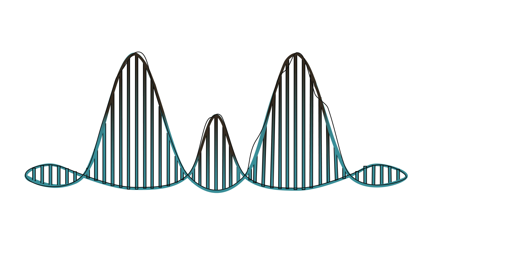

EBIO4100: Bioinformatics in the Mountains
2025-07-10
Welcome to EBIO4100: Bioinformatics in the Mountains!

Taught by Megan Frayer
July 2025
0.1 How to use this ebook
This text will outline the activities that we will complete each afternoon during the course. This book should remain available on my GitHub page after the class Canvas site goes away.
Some extra information you will see in this text:
Keep Learning!
Boxes like these will indicate resources where you can learn more! These resources are not necessary for our course, and will not be part of assignments– they are just for your own learning.
Caution!
Boxes like these will indicate common pitfalls or places where we will make assumptions for simplicity that you should NOT make in real data.
0.3 How to succeed in this course:
Bioinformatic software is always being improved. This means it is not important to memorize commands, but to understand the types of data and challenges you will face. This course is meant to give you a starting point for digging deeper into the questions and work that might interest you in the future.